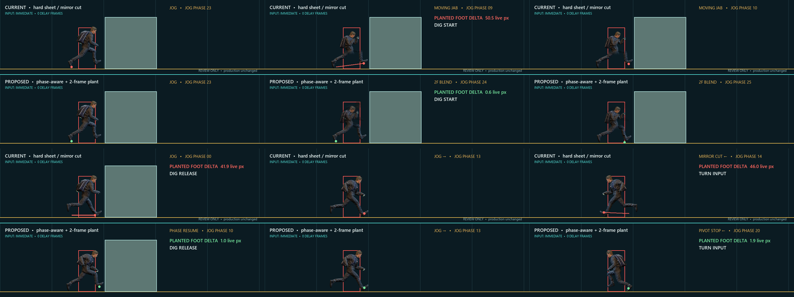

SURVIVAL CHARACTER • ANIMATION LAB
Phase handoff review
Loading measured Jog handoffs…
Loading…
BOUNDARY FRAMES
Look at the feet at DIG START, DIG RELEASE, and TURN INPUT

SURVIVAL CHARACTER • ANIMATION LAB
Loading measured Jog handoffs…
BOUNDARY FRAMES
